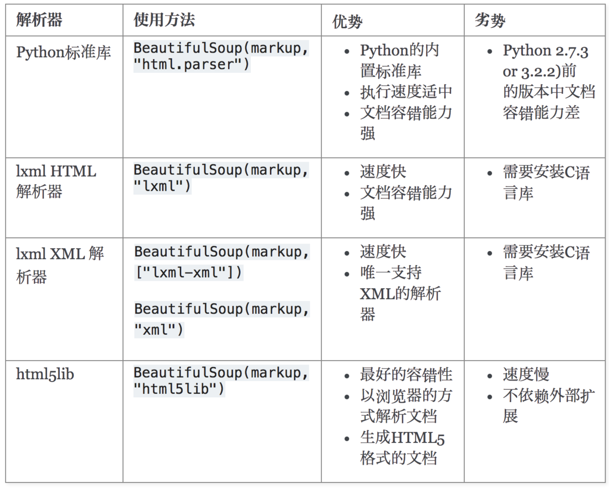

bs4 1 2 bs4全称Beautiful Soup,是python的一个库，最主要的功能是从网页抓取数据。提供一些简单的、python式的函数用来处理导航、搜索、修改分析树等功能。 它是一个工具箱，通过解析文档为用户提供需要抓取的数据，因为简单，所以不需要多少代码就可以写出一个完整的应用程序。
bs4安装 1 Beautiful Soup支持Python标准库中的HTML解析器,还支持一些第三方的解析器，如果我们不安装它，则 Python 会使用 Python默认的解析器，lxml 解析器更加强大，速度更快，推荐安装。
1 2 3 pip install bs4 pip3 install lxml pip3 install html5lib
解析器对比

四种对象 1 2 Beautiful Soup将复杂HTML文档转换成一个复杂的树形结构,每个节点都是Python对象,所有对象可以归纳为4 种 分别是：BeautifulSoup,Tag,NavigableString,Comment
BeautifulSoup（文档）
1 BeautifulSoup 对象代表整个解析后的文档。它包含了整个文档的数据结构，并且可以遍历整个文档树。你可以使用 BeautifulSoup 对象来搜索文档树中的特定元素，或者对整个文档进行操作。
Tag（标签）
1 Tag 对象表示 HTML 或 XML 文档中的一个标签，比如 <div>、<p> 等。它可以包含其他标签、字符串以及其他类型的数据。Tag 对象可以通过 BeautifulSoup 的方法或属性来获取。
NavigableString（可遍历字符串）
1 NavigableString 对象表示标签中的字符串内容。在解析 HTML 或 XML 文档时，文本内容会被自动转换为 NavigableString 对象。它可以被遍历，也可以调用字符串方法。
Comment（注释）
1 Comment 对象表示 HTML 或 XML 文档中的注释内容。与 NavigableString 类似，Beautiful Soup 会自动将注释内容转换为 Comment 对象。注释对象可以像字符串一样被遍历，也可以调用字符串方法。
获取四种对象 1 2 3 4 5 6 7 8 9 10 11 12 13 14 15 16 17 18 19 20 21 22 23 24 25 26 27 28 29 30 31 32 33 34 <html lang ="en" > <head > <meta charset ="UTF-8" /> <title > 测试bs4</title > </head > <body > <div > <p > 百里守约</p > </div > <div class ="song" > <p > 李清照</p > <p > 王安石</p > <p > 苏轼</p > <p > 柳宗元</p > <a href ="http://www.song.com/" title ="赵匡胤" target ="_self" > <span > this is span</span > 宋朝是最强大的王朝，不是军队的强大，而是经济很强大，国民都很有钱</a > <a href ="" class ="du" > 总为浮云能蔽日,长安不见使人愁</a > <img src ="http://www.baidu.com/meinv.jpg" alt ="" /> </div > <div class ="tang" > <ul > <li > <a href ="http://www.baidu.com" title ="qing" > 清明时节雨纷纷,路上行人欲断魂,借问酒家何处有,牧童遥指杏花村</a > </li > <li > <a href ="http://www.163.com" title ="qin" > 秦时明月汉时关,万里长征人未还,但使龙城飞将在,不教胡马度阴山</a > </li > <li > <a href ="http://www.126.com" alt ="qi" > 岐王宅里寻常见,崔九堂前几度闻,正是江南好风景,落花时节又逢君</a > </li > <li > <a href ="http://www.sina.com" class ="du" > 杜甫</a > </li > <li > <a href ="http://www.dudu.com" class ="du" > 杜牧</a > </li > <li > <b > 杜小月</b > </li > <li > <i > 度蜜月</i > </li > <li > <a href ="http://www.haha.com" id ="feng" > 凤凰台上凤凰游,凤去台空江自流,吴宫花草埋幽径,晋代衣冠成古丘</a > </li > </ul > </div > </body > </html >
BeautifulSoup（文档）
1 2 3 soup = BeautifulSoup(open ("../cook.html" ), 'lxml' ) soup = BeautifulSoup(html, 'html.parser' ) print (type (soup))
Tag（标签）
1 2 3 4 5 6 7 8 9 10 11 12 13 14 tag = soup.body.div.p tag = soup.body.div.p.text tag = soup.body.div.p.name tag = soup.body.div.p.attrs tag = soup.body.div.p["title" ] tag = soup.body.div.p.string tag=soup.find("p" ) tag=soup.find_all("p" ) tag= soup.select("a#feng" ) tag= soup.select("a.du" ) tag= soup.select("a" ) tag= soup.select_one("" )
NavigableString（可遍历字符串）
Comment（注释）
1 2 3 4 5 6 7 8 9 markup = "<b><!--Hey, buddy. Want to buy a used parser?--></b>" soup = BeautifulSoup(markup,"html.parser" ) comment = soup.b.string print (comment) print (type (comment))
常用属性和函数 属性（属性也提供了对应的函数调用式）
contents
1 2 返回一个列表，包含了该标签的所有直接子节点。 与 children 属性类似，但 contents 返回的是一个列表，而 children 返回的是一个迭代器。
children
1 2 返回一个迭代器，包含了该标签的所有直接子节点。 可以通过迭代这个迭代器来获取标签的所有直接子节点。
descendants
1 2 返回一个迭代器，包含了该标签的所有子孙节点，即包括直接子节点、子节点的子节点，以此类推。 可以通过迭代这个迭代器来获取标签的所有子孙节点。
parent
1 2 返回该标签的直接父节点。 如果标签没有父节点（即处于文档树的顶层），则返回 None。
parents
1 2 返回一个迭代器，包含了该标签的所有祖先节点，即包括父节点、父节点的父节点，以此类推。 可以通过迭代这个迭代器来获取标签的所有祖先节点。
next_sibling
1 2 返回该标签的下一个兄弟节点。 如果没有下一个兄弟节点，则返回 None。
previous_sibling
1 2 返回该标签的上一个兄弟节点。 如果没有上一个兄弟节点，则返回 None。
previous_siblings
1 2 返回一个迭代器，包含了该标签的所有前面的兄弟节点。 可以通过迭代这个迭代器来获取标签的所有前面的兄弟节点。
示例
1 2 3 4 5 6 7 8 9 10 11 12 13 14 15 16 17 18 19 20 21 22 23 24 25 26 27 28 29 30 31 32 33 34 35 36 37 38 39 40 41 42 43 44 45 46 from bs4 import BeautifulSouphtml_doc = """ <html><head><title>The Dormouse's story</title></head> <body> <p class="title"><b>The Dormouse's story</b></p> <p class="story">Once upon a time there were three little sisters; and their names were <a href="http://example.com/elsie" class="sister" id="link1">Elsie</a>, <a href="http://example.com/lacie" class="sister" id="link2">Lacie</a> and <a href="http://example.com/tillie" class="sister" id="link3">Tillie</a>; and they lived at the bottom of a well.</p> <p class="story">...</p> """ soup = BeautifulSoup(html_doc, 'html.parser' ) print (soup.head.title.text)print (soup.body.a.text)print (soup.p.contents) print (soup.p.children) for i, child in enumerate (soup.p.children, 1 ): print (i, child) print (soup.p.descendants) for i, child in enumerate (soup.p.descendants, 1 ): print (i, child) for i, child in enumerate (soup.find_all("p" )[1 ].descendants, 1 ): print (i, child) print (soup.a.parent) print (soup.a.parent.text) print (soup.a.parents) print ("===" )print (soup.a.next_sibling) print (soup.a.next_sibling.next_sibling)print (soup.a.previous_sibling.previous_sibling)print (soup.a.previous_siblings)
函数
get() | []
1 2 可以通过节点对象的属性名来直接获取属性的值。例如，如果你有一个节点对象 tag，你可以通过 tag['属性名'] 的方式来获取属性的值。 另一种获取属性值的方法是使用 get() 方法。这种方法可以在属性不存在时提供一个默认值。
find(name, attrs, recursive, text, kwargs)
1 2 3 方法用于查找文档中符合条件的第一个节点。 可以通过指定标签名称、属性、文本内容等条件来查找节点。 返回找到的第一个符合条件的节点，如果没有找到则返回 None。
find_all(name, attrs, recursive, text, limit, kwargs)
1 2 3 方法用于查找文档中符合条件的所有节点，并以列表的形式返回。 可以通过指定标签名称、属性、文本内容等条件来查找节点。 返回所有符合条件的节点组成的列表，如果没有找到则返回空列表。
1 2 3 4 5 6 7 8 9 10 11 12 13 14 15 16 17 18 19 20 21 22 23 24 25 26 27 28 soup = BeautifulSoup(html_doc, 'lxml' ) print (soup.find_all(name='a' ))print (soup.find_all(name=re.compile ('^b' ))) print (soup.find_all(name=['a' , 'b' ]))def has_class_but_no_id (tag ): return tag.has_attr('class' ) and tag.has_attr('id' ) print (soup.find_all(name=has_class_but_no_id))print (soup.find_all(href="http://example.com/tillie" ))print (soup.find_all(href=re.compile ("^http://" )))print (soup.find_all(id =True )) print (soup.find_all(href=re.compile ("http://" ), id ='link1' ) print (soup.find_all("a" , class_="sister" )) print (soup.find_all("a" ,attrs={"href" : re.compile ("^http://" ), "id" : re.compile ("^link[12]" )})) data_soup.find_all(attrs={"data-foo" : "value" })
recursive 是否从当前位置递归往下查询，如果不递归，只会查询当前 soup文档的子元素
text这里是通过tag的内容来搜索，并且返回的是内容，而不是tag类型的元素
**kwargs 自动拆包接受属性值，所以才会有 soup.find_all('a',id='title') ，id=’title’为 **kwargs自动拆包掺入limit 参数限制返回结果的数量.
select
1 2 3 方法使用 CSS 选择器语法来选择节点。 可以通过传入相应的 CSS 选择器来选择符合条件的节点。 返回所有符合选择器条件的节点组成的列表。
select_one
1 2 select_one() 方法与 select() 方法类似，但返回的是符合条件的第一个节点。 如果找到符合条件的节点，则返回第一个符合条件的节点；如果没有找到则返回 None。
1 支持css选择器查询的函数为select和select_one。
目前支持的选择器如下案例
1 2 3 4 5 6 7 8 9 10 11 12 13 14 15 16 17 18 19 20 21 22 23 24 25 26 27 28 29 30 31 32 33 34 35 36 37 38 39 40 41 42 43 44 45 46 47 48 49 50 51 52 53 54 55 56 57 58 59 60 61 62 63 64 65 66 67 68 69 70 71 72 73 74 75 76 77 78 79 80 81 82 83 84 85 86 87 88 89 90 soup.select("title" ) soup.select("p nth-of-type(3)" ) soup.select("body a" ) soup.select("html head title" ) soup.select("head > title" ) soup.select("p > a" ) soup.select("p > a:nth-of-type(2)" ) soup.select("p > #link1" ) soup.select("body > a" ) soup.select("#link1 ~ .sister" ) soup.select("#link1 + .sister" ) soup.select(".sister" ) soup.select("[class~=sister]" ) soup.select("#link1" ) soup.select("a#link2" ) soup.select("#link1,#link2" ) soup.select('a[href]' ) soup.select('a[href="http://example.com/elsie"]' ) soup.select('a[href^="http://example.com/"]' ) soup.select('a[href$="tillie"]' ) soup.select('a[href*=".com/el"]' ) multilingual_markup = """ <p lang="en">Hello</p> <p lang="en-us">Howdy, y'all</p> <p lang="en-gb">Pip-pip, old fruit</p> <p lang="fr">Bonjour mes amis</p> """ multilingual_soup = BeautifulSoup(multilingual_markup) multilingual_soup.select('p[lang|=en]' )